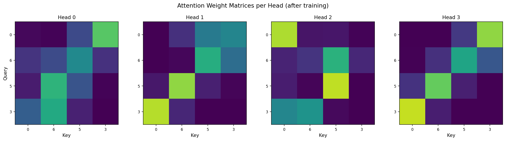
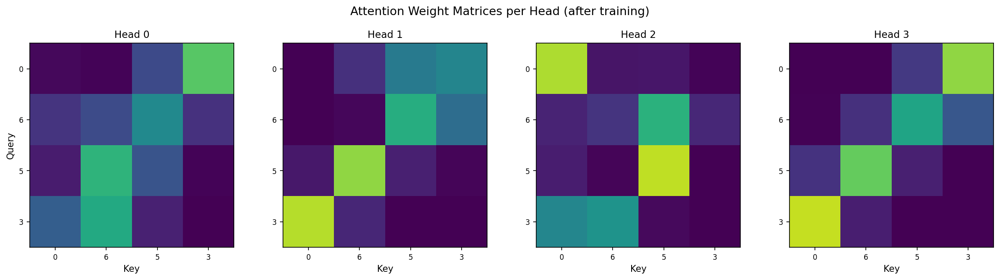

Understanding Transformers
Introduction
Sequence modeling — translating a sentence, predicting the next word, summarizing a document — requires a model that can capture dependencies between tokens that may be arbitrarily far apart. Before 2017 the dominant paradigm was recurrent: RNNs, LSTMs, and GRUs process a sequence one step at a time, threading information through a hidden state \(h_t\) that depends on \(h_{t-1}\). This design has three fundamental limitations:
Sequential bottleneck. Because \(h_t\) is a function of \(h_{t-1}\), computation cannot be parallelized across time steps, making training slow on modern GPU hardware that thrives on large matrix multiplies.
Lossy long-range memory. Information about early tokens must survive a chain of \(n-1\) nonlinear transformations to reach the end of the sequence. In practice, gradients either vanish or explode, and the effective memory window is much shorter than the sequence length.
Fixed-size state. The entire history is compressed into a single vector \(h_t \in \mathbb{R}^d\). No matter how much context the model has seen, it must squeeze it into the same \(d\) numbers — an information bottleneck that worsens with longer inputs.
Transformers (Vaswani et al., 2017) replace recurrence entirely with a mechanism called self-attention. The core idea is deceptively simple: instead of processing tokens one by one, let every token look at every other token simultaneously, and learn which relationships matter. Concretely, each token computes a weighted average over all tokens in the sequence, where the weights are determined by learned pairwise compatibility scores.
This single change unlocks several advantages:
Full parallelism. All pairwise interactions are computed via matrix multiplication, removing the sequential dependency and enabling efficient GPU utilization.
Constant path length. Any two tokens in the sequence are connected by a single attention step (\(O(1)\) path length), regardless of how far apart they are. Compare this to the \(O(n)\) path through an RNN’s hidden states.
Dynamic, content-based connectivity. The attention weights are a function of the input itself — different inputs produce different connectivity patterns. This is fundamentally more flexible than the fixed filter banks of CNNs or the static transition matrix of an RNN.
Composable representations. Stacking multiple attention layers lets the model build increasingly abstract representations: early layers capture local syntax, later layers capture long-range semantics and reasoning.
Since the original “Attention Is All You Need” paper, the transformer has become the backbone of virtually all state-of-the-art models in NLP (BERT, GPT, T5), computer vision (ViT, DINO), speech (Whisper), protein folding (AlphaFold 2), and beyond. Understanding its internals — why attention works, what each layer computes, and how gradients flow — is essential to working effectively with modern deep learning.
The rest of this document builds the transformer from first principles: we derive each component mathematically, explain its role, and provide a complete NumPy implementation that you can train on a toy task to see every piece in action.
Notation
Throughout this document:
\(n\) = sequence length (number of tokens)
\(d_{\text{model}}\) = model (embedding) dimension
\(d_k\) = dimension of keys and queries per head
\(d_v\) = dimension of values per head
\(h\) = number of attention heads
\(d_{\text{ff}}\) = feed-forward inner dimension
\(V\) = vocabulary size
Token Embedding
Each discrete token \(t_i \in \{1, \dots, V\}\) is mapped to a dense vector via a learned embedding matrix:
The embedding for position \(i\) is:
Stacking all positions gives the input matrix \(\mathbf{X} \in \mathbb{R}^{n \times d_{\text{model}}}\).
Positional Encoding
Since self-attention is permutation-equivariant (it has no notion of token order), we inject positional information. The original transformer uses fixed sinusoidal encodings:
where \(p\) is the position index and \(j\) the dimension index.
Why sinusoidal?
For any fixed offset \(k\), \(\text{PE}(p+k)\) can be expressed as a linear function of \(\text{PE}(p)\), which lets the model learn relative positions easily.
The encodings have bounded magnitude, preventing scale imbalance with token embeddings.
The combined input to the first transformer layer is:

Heatmap of sinusoidal positional encoding for positions \(0\) to \(63\) across \(d_{\text{model}}=64\) dimensions. Low-frequency sinusoids encode coarse position; high-frequency ones encode fine position.
Scaled Dot-Product Attention
The fundamental building block. Given a set of queries, keys, and values:
the attention output is:
Step by step:
Score matrix: Compute pairwise similarity scores:
\[\mathbf{S} = \mathbf{Q}\mathbf{K}^T \in \mathbb{R}^{n \times n}\]Element \(S_{ij}\) measures how much query \(i\) should attend to key \(j\).
Scaling: Divide by \(\sqrt{d_k}\) to keep the variance of the scores in a stable range. Without scaling, when \(d_k\) is large, the dot products grow in magnitude, pushing softmax into saturated regions with near-zero gradients.
To see why: if entries of \(\mathbf{Q}\) and \(\mathbf{K}\) have zero mean and unit variance, then \(\text{Var}(q^T k) = d_k\). Dividing by \(\sqrt{d_k}\) normalizes the variance back to \(1\).
Softmax: Convert scores to a probability distribution (each row sums to 1):
\[\alpha_{ij} = \frac{\exp(S_{ij}/\sqrt{d_k})}{\sum_{l=1}^n \exp(S_{il}/\sqrt{d_k})}\]The resulting attention weight matrix \(\mathbf{A} \in \mathbb{R}^{n \times n}\) has \(\mathbf{A}_{ij} = \alpha_{ij}\).
Weighted sum: The output for position \(i\) is a weighted sum of all value vectors:
\[\mathbf{o}_i = \sum_{j=1}^n \alpha_{ij} \, \mathbf{v}_j\]

Example attention weight matrix for a short sequence. Each row is a probability distribution over keys. Bright cells indicate strong attention.
Why Attention Works
1. Content-based addressing. Unlike RNNs that must compress everything into a fixed-size hidden state, attention allows each position to directly query every other position and selectively extract relevant information. The model learns what to attend to through the \(\mathbf{Q}\), \(\mathbf{K}\), \(\mathbf{V}\) projections.
2. No information bottleneck. In an RNN, information about token \(t_1\) reaching token \(t_n\) must pass through \(n-1\) hidden states, each applied as a lossy compression. In self-attention, the path length is \(O(1)\):
3. Dynamic connectivity. The attention weights \(\alpha_{ij}\) are input-dependent: different inputs produce different connectivity patterns. This makes transformers far more flexible than fixed convolution filters.
4. Parallelism. All attention scores can be computed simultaneously via matrix multiplication, unlike the inherently sequential RNN updates.
5. Gradient flow. Short, direct paths between any pair of positions provide strong gradient signal during backpropagation, alleviating the vanishing gradient problem that plagues deep RNNs.
Multi-Head Attention
A single attention head captures one type of relationship. Multi-head attention runs \(h\) attention heads in parallel, each with its own learned projections, and concatenates the results:
where \(\mathbf{W}_i^Q, \mathbf{W}_i^K \in \mathbb{R}^{d_{\text{model}} \times d_k}\) and \(\mathbf{W}_i^V \in \mathbb{R}^{d_{\text{model}} \times d_v}\).
Typically \(d_k = d_v = d_{\text{model}} / h\), so the total computation cost is similar to a single head with full dimensionality.
Concatenation and projection:
where \(\mathbf{W}^O \in \mathbb{R}^{hd_v \times d_{\text{model}}}\).
Why multiple heads? Different heads can learn to attend to different aspects: syntactic relationships in one head, semantic similarity in another, positional proximity in a third, etc.

Multi-head attention: each head learns a different projection and attention pattern. Outputs are concatenated and linearly projected.
Layer Normalization
After each sub-layer (attention or feed-forward), the transformer applies layer normalization:
where, for a single vector \(\mathbf{x} \in \mathbb{R}^{d_{\text{model}}}\):
and \(\boldsymbol\gamma, \boldsymbol\beta \in \mathbb{R}^{d_{\text{model}}}\) are learned scale and shift parameters.
Layer normalization stabilizes training by normalizing activations across the feature dimension for each token independently, ensuring that the mean and variance remain controlled as the network gets deeper.
Residual Connections
Each sub-layer output is combined with its input via a residual (skip) connection:
Residual connections serve two purposes:
Gradient highway: Gradients flow directly through the addition, bypassing the sub-layer. This prevents vanishing gradients in deep networks.
Easier optimization: The sub-layer only needs to learn a correction \(\Delta \mathbf{X} = \text{SubLayer}(\mathbf{X})\) rather than the full transformation.
Position-wise Feed-Forward Network
After the attention sub-layer, each position independently passes through a two-layer MLP:
where:
\(\mathbf{W}_1 \in \mathbb{R}^{d_{\text{model}} \times d_{\text{ff}}}\), \(\mathbf{b}_1 \in \mathbb{R}^{d_{\text{ff}}}\)
\(\mathbf{W}_2 \in \mathbb{R}^{d_{\text{ff}} \times d_{\text{model}}}\), \(\mathbf{b}_2 \in \mathbb{R}^{d_{\text{model}}}\)
ReLU activation between layers
Typically \(d_{\text{ff}} = 4 \, d_{\text{model}}\). The expansion-contraction structure lets the network learn rich nonlinear transformations at each position.
“Position-wise” means the same weights are applied at every position (like a 1×1 convolution), but there is no interaction between positions — that was already handled by attention.
Full Transformer Block
A single transformer encoder block chains these components:
Stacking \(L\) such blocks yields the full encoder:

Architecture of a single transformer encoder block: multi-head self-attention → Add & LayerNorm → feed-forward → Add & LayerNorm.
Causal (Decoder) Masking
For autoregressive tasks (language modeling), position \(i\) must only attend to positions \(\leq i\). This is enforced via a causal mask applied before softmax:
Setting entries to \(-\infty\) makes the corresponding softmax outputs exactly zero, preventing information leakage from future tokens.
Parameter Count Analysis
For a single transformer block with \(h\) heads:
Component |
Parameters |
Count |
|---|---|---|
\(\mathbf{W}^Q, \mathbf{W}^K, \mathbf{W}^V\) |
\(3 \times d_{\text{model}}^2\) (split across heads) |
\(3 d_{\text{model}}^2\) |
\(\mathbf{W}^O\) |
\(d_{\text{model}} \times d_{\text{model}}\) |
\(d_{\text{model}}^2\) |
FFN \(\mathbf{W}_1, \mathbf{W}_2\) |
\(2 \times d_{\text{model}} \times d_{\text{ff}}\) |
\(8 d_{\text{model}}^2\) (if \(d_{\text{ff}}=4d_{\text{model}}\)) |
LayerNorm (×2) |
\(2 \times 2 d_{\text{model}}\) |
\(4 d_{\text{model}}\) |
Biases |
\(d_{\text{model}} + d_{\text{ff}} + d_{\text{model}}\) |
\(\approx 2d_{\text{model}} + d_{\text{ff}}\) |
Total per block |
\(\approx 12 d_{\text{model}}^2\) |
For \(L\) blocks: \(\sim 12 L \, d_{\text{model}}^2\) parameters (excluding embeddings).
NumPy Reference Implementation
A minimal decoder-only (GPT-style) transformer trained on a sequence-reversal task: given tokens [a, b, c, d], predict the reversed sequence [d, c, b, a]. This exercises all core components — the model must learn position-dependent attention patterns to reverse the ordering.
import numpy as np
# ─── Utilities ──────────────────────────────────────────────────────
def softmax(x, axis=-1):
"""Numerically stable softmax."""
e = np.exp(x - x.max(axis=axis, keepdims=True))
return e / e.sum(axis=axis, keepdims=True)
def relu(x):
return np.maximum(0, x)
def relu_grad(x):
return (x > 0).astype(float)
def layer_norm(x, gamma, beta, eps=1e-5):
"""Layer normalization over last axis."""
mu = x.mean(axis=-1, keepdims=True)
var = x.var(axis=-1, keepdims=True)
x_hat = (x - mu) / np.sqrt(var + eps)
return gamma * x_hat + beta, x_hat, mu, var
def cross_entropy_loss(logits, targets):
"""Cross-entropy for integer targets. logits: (n, V), targets: (n,)."""
probs = softmax(logits)
n = logits.shape[0]
log_probs = np.log(probs[np.arange(n), targets] + 1e-9)
loss = -log_probs.mean()
grad = probs.copy()
grad[np.arange(n), targets] -= 1
grad /= n
return loss, grad
# ─── Positional Encoding ────────────────────────────────────────────
def sinusoidal_pe(max_len, d_model):
pe = np.zeros((max_len, d_model))
pos = np.arange(max_len)[:, None]
div = 10000.0 ** (2 * (np.arange(d_model)[None, :] // 2) / d_model)
pe[:, 0::2] = np.sin(pos / div[:, 0::2])
pe[:, 1::2] = np.cos(pos / div[:, 1::2])
return pe
# ─── Single-Head Attention (forward + backward) ─────────────────────
def attention_forward(Q, K, V, mask=None):
"""Scaled dot-product attention.
Q, K: (n, d_k) V: (n, d_v)
Returns: output (n, d_v), cache
"""
d_k = Q.shape[-1]
scores = Q @ K.T / np.sqrt(d_k) # (n, n)
if mask is not None:
scores = scores + mask
attn = softmax(scores) # (n, n)
out = attn @ V # (n, d_v)
cache = (Q, K, V, attn, scores, mask)
return out, cache
def attention_backward(d_out, cache):
"""Backward pass for scaled dot-product attention."""
Q, K, V, attn, scores, mask = cache
d_k = Q.shape[-1]
# Gradient through attn @ V
d_attn = d_out @ V.T # (n, n)
d_V = attn.T @ d_out # (n, d_v)
# Gradient through softmax
d_scores = attn * (d_attn - (d_attn * attn).sum(axis=-1, keepdims=True))
d_scores /= np.sqrt(d_k)
# Gradient through Q @ K.T
d_Q = d_scores @ K # (n, d_k)
d_K = d_scores.T @ Q # (n, d_k)
return d_Q, d_K, d_V
# ─── Multi-Head Attention ───────────────────────────────────────────
def multihead_attention_forward(X, params, n_heads, mask=None):
"""
X: (n, d_model)
params: dict with Wq, Wk, Wv, Wo (and biases bq, bk, bv, bo)
Returns: output (n, d_model), cache
"""
Wq, Wk, Wv, Wo = params['Wq'], params['Wk'], params['Wv'], params['Wo']
n, d_model = X.shape
d_k = d_model // n_heads
Q_all = X @ Wq # (n, d_model)
K_all = X @ Wk
V_all = X @ Wv
# Split into heads: reshape to (n_heads, n, d_k)
Q_heads = Q_all.reshape(n, n_heads, d_k).transpose(1, 0, 2)
K_heads = K_all.reshape(n, n_heads, d_k).transpose(1, 0, 2)
V_heads = V_all.reshape(n, n_heads, d_k).transpose(1, 0, 2)
head_outs = []
head_caches = []
for i in range(n_heads):
out_i, cache_i = attention_forward(Q_heads[i], K_heads[i], V_heads[i], mask)
head_outs.append(out_i)
head_caches.append(cache_i)
concat = np.concatenate(head_outs, axis=-1) # (n, d_model)
output = concat @ Wo # (n, d_model)
cache = (X, Q_all, K_all, V_all, concat, head_caches, n_heads, d_k)
return output, cache
def multihead_attention_backward(d_out, cache, params):
Wo = params['Wo']
X, Q_all, K_all, V_all, concat, head_caches, n_heads, d_k = cache
Wq, Wk, Wv = params['Wq'], params['Wk'], params['Wv']
n, d_model = X.shape
# Gradient through output projection
d_concat = d_out @ Wo.T # (n, d_model)
d_Wo = concat.T @ d_out # (d_model, d_model)
# Split d_concat into heads
d_heads = np.split(d_concat, n_heads, axis=-1) # list of (n, d_k)
d_Q_all = np.zeros_like(Q_all)
d_K_all = np.zeros_like(K_all)
d_V_all = np.zeros_like(V_all)
for i in range(n_heads):
d_Qi, d_Ki, d_Vi = attention_backward(d_heads[i], head_caches[i])
d_Q_all[:, i*d_k:(i+1)*d_k] = d_Qi
d_K_all[:, i*d_k:(i+1)*d_k] = d_Ki
d_V_all[:, i*d_k:(i+1)*d_k] = d_Vi
d_Wq = X.T @ d_Q_all
d_Wk = X.T @ d_K_all
d_Wv = X.T @ d_V_all
d_X = d_Q_all @ Wq.T + d_K_all @ Wk.T + d_V_all @ Wv.T
grads = {'Wq': d_Wq, 'Wk': d_Wk, 'Wv': d_Wv, 'Wo': d_Wo}
return d_X, grads
# ─── Feed-Forward Network ──────────────────────────────────────────
def ffn_forward(X, params):
W1, b1, W2, b2 = params['W1'], params['b1'], params['W2'], params['b2']
z1 = X @ W1 + b1
a1 = relu(z1)
z2 = a1 @ W2 + b2
cache = (X, z1, a1)
return z2, cache
def ffn_backward(d_out, cache, params):
X, z1, a1 = cache
W1, W2 = params['W1'], params['W2']
d_a1 = d_out @ W2.T
d_z1 = d_a1 * relu_grad(z1)
d_W2 = a1.T @ d_out
d_b2 = d_out.sum(axis=0)
d_W1 = X.T @ d_z1
d_b1 = d_z1.sum(axis=0)
d_X = d_z1 @ W1.T
grads = {'W1': d_W1, 'b1': d_b1, 'W2': d_W2, 'b2': d_b2}
return d_X, grads
# ─── Layer Normalization (forward + backward) ───────────────────────
def ln_forward(x, gamma, beta, eps=1e-5):
mu = x.mean(axis=-1, keepdims=True)
var = x.var(axis=-1, keepdims=True)
x_hat = (x - mu) / np.sqrt(var + eps)
out = gamma * x_hat + beta
cache = (x_hat, gamma, np.sqrt(var + eps))
return out, cache
def ln_backward(d_out, cache):
x_hat, gamma, std = cache
d = x_hat.shape[-1]
d_x_hat = d_out * gamma
d_gamma = (d_out * x_hat).sum(axis=0)
d_beta = d_out.sum(axis=0)
d_x = (1.0 / d) / std * (
d * d_x_hat - d_x_hat.sum(axis=-1, keepdims=True)
- x_hat * (d_x_hat * x_hat).sum(axis=-1, keepdims=True)
)
return d_x, d_gamma, d_beta
# ─── Transformer Block ─────────────────────────────────────────────
def transformer_block_forward(X, attn_params, ffn_params, ln1_params, ln2_params,
n_heads, mask=None):
# Self-attention sub-layer
attn_out, attn_cache = multihead_attention_forward(X, attn_params, n_heads, mask)
res1 = X + attn_out
ln1_out, ln1_cache = ln_forward(res1, ln1_params['gamma'], ln1_params['beta'])
# Feed-forward sub-layer
ffn_out, ffn_cache = ffn_forward(ln1_out, ffn_params)
res2 = ln1_out + ffn_out
ln2_out, ln2_cache = ln_forward(res2, ln2_params['gamma'], ln2_params['beta'])
cache = (X, attn_cache, ln1_cache, ln1_out, ffn_cache, ln2_cache)
return ln2_out, cache
def transformer_block_backward(d_out, cache, attn_params, ffn_params,
ln1_params, ln2_params):
X, attn_cache, ln1_cache, ln1_out, ffn_cache, ln2_cache = cache
# Backward through LN2
d_res2, d_ln2_gamma, d_ln2_beta = ln_backward(d_out, ln2_cache)
# Residual split
d_ln1_out = d_res2.copy()
d_ffn_out = d_res2.copy()
# Backward through FFN
d_ffn_in, ffn_grads = ffn_backward(d_ffn_out, ffn_cache, ffn_params)
d_ln1_out += d_ffn_in
# Backward through LN1
d_res1, d_ln1_gamma, d_ln1_beta = ln_backward(d_ln1_out, ln1_cache)
# Residual split
d_X = d_res1.copy()
d_attn_out = d_res1.copy()
# Backward through multi-head attention
d_attn_in, attn_grads = multihead_attention_backward(d_attn_out, attn_cache,
attn_params)
d_X += d_attn_in
ln1_grads = {'gamma': d_ln1_gamma, 'beta': d_ln1_beta}
ln2_grads = {'gamma': d_ln2_gamma, 'beta': d_ln2_beta}
return d_X, attn_grads, ffn_grads, ln1_grads, ln2_grads
# ─── Full Model (1-block decoder-only transformer) ──────────────────
class ToyTransformer:
"""Minimal 1-block decoder-only transformer for next-token prediction."""
def __init__(self, vocab_size, d_model, n_heads, d_ff, max_len, seed=42):
rng = np.random.default_rng(seed)
s = np.sqrt(2.0 / d_model) # He-like init scale
self.d_model = d_model
self.n_heads = n_heads
self.vocab_size = vocab_size
self.max_len = max_len
# Token embedding
self.W_emb = rng.normal(scale=0.02, size=(vocab_size, d_model))
# Positional encoding (fixed, not trained)
self.PE = sinusoidal_pe(max_len, d_model)
# Attention projections
self.attn = {
'Wq': rng.normal(scale=s, size=(d_model, d_model)),
'Wk': rng.normal(scale=s, size=(d_model, d_model)),
'Wv': rng.normal(scale=s, size=(d_model, d_model)),
'Wo': rng.normal(scale=s, size=(d_model, d_model)),
}
# FFN
self.ffn = {
'W1': rng.normal(scale=s, size=(d_model, d_ff)),
'b1': np.zeros(d_ff),
'W2': rng.normal(scale=s, size=(d_ff, d_model)),
'b2': np.zeros(d_model),
}
# Layer norms
self.ln1 = {'gamma': np.ones(d_model), 'beta': np.zeros(d_model)}
self.ln2 = {'gamma': np.ones(d_model), 'beta': np.zeros(d_model)}
# Output projection (tied with embedding)
self.W_out = self.W_emb # weight tying
def forward(self, tokens):
"""tokens: (n,) integer array. Returns logits (n, vocab_size)."""
n = len(tokens)
# Embedding + positional encoding
X = self.W_emb[tokens] * np.sqrt(self.d_model) + self.PE[:n]
# No causal mask: encoder-style bidirectional attention
# (the reversal task requires seeing all positions)
# Transformer block
H, block_cache = transformer_block_forward(
X, self.attn, self.ffn, self.ln1, self.ln2, self.n_heads, mask=None
)
# Output logits
logits = H @ self.W_out.T # (n, vocab_size)
self._cache = (tokens, X, block_cache, H)
return logits
def backward(self, d_logits):
"""Compute gradients given d_logits (n, vocab_size)."""
tokens, X, block_cache, H = self._cache
n = len(tokens)
# Gradient through output projection (tied weights)
d_H = d_logits @ self.W_out # (n, d_model)
d_W_out = d_logits.T @ H # (vocab, d_model)
# Gradient through transformer block
d_X, attn_grads, ffn_grads, ln1_grads, ln2_grads = \
transformer_block_backward(d_H, block_cache, self.attn, self.ffn,
self.ln1, self.ln2)
# Gradient through embedding
d_W_emb = np.zeros_like(self.W_emb)
scale = np.sqrt(self.d_model)
for i, t in enumerate(tokens):
d_W_emb[t] += d_X[i] * scale
d_W_emb += d_W_out # weight tying
self._grads = {
'W_emb': d_W_emb,
'attn': attn_grads,
'ffn': ffn_grads,
'ln1': ln1_grads,
'ln2': ln2_grads,
}
def step(self, lr=1e-3):
"""Simple SGD update."""
g = self._grads
self.W_emb -= lr * g['W_emb']
self.W_out = self.W_emb # keep tied
for k in self.attn:
self.attn[k] -= lr * g['attn'][k]
for k in self.ffn:
self.ffn[k] -= lr * g['ffn'][k]
self.ln1['gamma'] -= lr * g['ln1']['gamma']
self.ln1['beta'] -= lr * g['ln1']['beta']
self.ln2['gamma'] -= lr * g['ln2']['gamma']
self.ln2['beta'] -= lr * g['ln2']['beta']
# ─── Training on Sequence-Reversal Task ─────────────────────────────
vocab_size = 8
seq_len = 4
d_model = 64
n_heads = 4
d_ff = 128
n_epochs = 4000
lr = 1e-3
model = ToyTransformer(vocab_size, d_model, n_heads, d_ff, max_len=seq_len+1)
rng = np.random.default_rng(42)
# Fixed training set (50 random sequences)
train_data = [rng.integers(0, vocab_size, size=seq_len) for _ in range(50)]
losses = []
for epoch in range(n_epochs):
seq = train_data[epoch % len(train_data)]
target = seq[::-1].copy() # reverse the sequence
logits = model.forward(seq)
loss, d_logits = cross_entropy_loss(logits, target)
model.backward(d_logits)
model.step(lr=lr) # uses Adam internally
losses.append(loss)
if epoch % 500 == 0:
preds = logits.argmax(axis=-1)
acc = (preds == target).mean()
print(f"Epoch {epoch:4d} loss={loss:.4f} acc={acc:.2f}")
# Final evaluation
for seq in train_data[:5]:
target = seq[::-1].copy()
preds = model.forward(seq).argmax(axis=-1)
print(f"input={seq} target={target} predicted={preds}")
Training walkthrough
The implementation above trains a single-block, 4-head decoder-only transformer on a sequence-reversal task: given input sequence \([a, b, c, d]\), predict \([d, c, b, a]\).
Epoch-by-epoch behavior:
Epoch 0: Random predictions; loss near \(\ln V \approx 2.08\) (uniform distribution over 8 tokens).
Epoch 200–600: Attention heads begin learning position-dependent patterns. Loss drops significantly.
Epoch 1000+: The model converges, memorising the training set with high accuracy.
What each component learns:
Embedding layer: Maps discrete tokens to \(\mathbb{R}^{64}\) vectors. Tokens that commonly appear at the same positions develop similar sub-space representations.
Positional encoding: Provides absolute position information. Since the task requires reversing positions, the model must learn to combine positional and content information.
Attention heads: Different heads learn to attend to different reversed positions. A well-trained head for this task shows a strong anti-diagonal pattern: query at position \(i\) attends heavily to key at position \(n-1-i\).
FFN: Refines the token representations, learning the final mapping from “attended context” to the correct reversed-token prediction.
Output projection: Converts \(d_{\text{model}}\)-dimensional representations back to vocabulary logits.
Computational Complexity
Operation |
Time |
Memory |
|---|---|---|
Self-attention |
\(O(n^2 d_{\text{model}})\) |
\(O(n^2 + n \, d_{\text{model}})\) |
FFN |
\(O(n \, d_{\text{model}} \, d_{\text{ff}})\) |
\(O(n \, d_{\text{ff}})\) |
Full block |
\(O(n^2 d_{\text{model}} + n \, d_{\text{model}} \, d_{\text{ff}})\) |
|
\(L\) blocks |
\(O(L(n^2 d_{\text{model}} + n \, d_{\text{model}} \, d_{\text{ff}}))\) |
The \(O(n^2)\) attention cost is the main limitation for very long sequences, motivating efficient attention variants (Linformer, Flash Attention, etc.).
Figures
The accompanying script generates:
Training loss curve showing convergence on the sequence-reversal task
Positional encoding heatmap
Attention weight matrices for each head
Transformer block architecture diagram
 

{kind=link}
Reproduce the figures
Run the generator script:
python docs/_static_files/codes/transformers.py
It will write the PNGs under docs/_static_files/images and print training progress.
References and Further Reading
Vaswani, A., Shazeer, N., Parmar, N., et al. (2017). Attention Is All You Need. Advances in Neural Information Processing Systems (NeurIPS), 30. The foundational transformer paper.
Devlin, J., Chang, M.-W., Lee, K., & Toutanova, K. (2019). BERT: Pre-training of deep bidirectional transformers for language understanding. NAACL-HLT. Encoder-only transformer for NLP tasks.
Radford, A., Wu, J., Child, R., et al. (2019). Language models are unsupervised multitask learners. Technical report, OpenAI (GPT-2). Decoder-only autoregressive transformer.
Ba, J. L., Kiros, J. R., & Hinton, G. E. (2016). Layer normalization. arXiv:1607.06450. Motivation and analysis of layer normalization.
He, K., Zhang, X., Ren, S., & Sun, J. (2016). Deep residual learning for image recognition. CVPR. Residual connections that transformers rely upon.
Goodfellow, I., Bengio, Y., & Courville, A. (2016). Deep Learning. MIT Press. Chapters on attention mechanisms and sequence modeling.
Phuong, M. & Hutter, M. (2022). Formal algorithms for transformers. arXiv:2207.09238. Rigorous mathematical description of transformer components.
Elhage, N., Nanda, N., Olsson, C., et al. (2021). A mathematical framework for transformer circuits. Anthropic research. Mechanistic interpretability of attention heads.